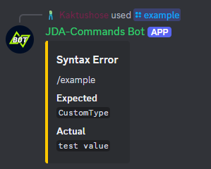

Type Adapters¶
TypeAdapters
are a part of the execution chain. They are used to adapt the input of a slash command to the correct type needed to invoke the method.
Default Type Adapters¶
JDA-Commands uses Proteus for its type adapting system. Proteus supports all
widening and narrowing primitive conversions as defined by the Java Language Specification. Additionally, JDA-Commands
has implemented default type adapters for JDAs GuildChannel
and its subtypes.
Thus, you can add all primitive types and their respective wrapper types as well as any underlying type of the
OptionType enum
as a parameter to your slash command methods. See Command Options
for details.
Writing Own Type Adapters¶
As mentioned above, JDA-Commands uses Proteus under the hood for type adapting.
The TypeAdapter interface is simply a subtype of Proteus' UniMapper.
The following example only covers the registration part for JDA-Commands. Please refer to the documentation
of Proteus for implementation details.
Example
@Implementation.TypeAdapter(source = String.class, target = UserProfile.class)
public class UserProfileTypeAdapter implements TypeAdapter<String, UserProfile> {
public MappingResult<UserProfile> from(String source, MappingContext<String, UserProfile> context) {
return MappingResult.lossless(new UserProfile(source));
}
}
Tip
If your type adapter is simple enough, you could also just use lambda expressions:
Your own types will be mapped to OptionType.STRING by default. You can
override this mapping by using the @Param
annotation.
Example
For our example this would also mean that we would need to update the UserProfileTypeAdapter to use User instead of
String as its source type.
Error Messages¶
If the type adapting fails an error message will be sent to the user:

You can customize this error message, find more about it here.